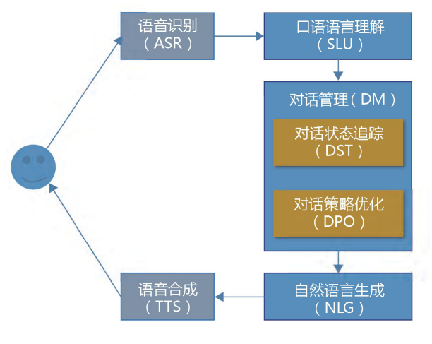

对话系统分类
| 任务型 | 开放域聊天 | 知识问答 | 推荐系统 | |
|---|---|---|---|---|
| 目的 | 完成任务/动作 | 闲聊 | 知识获取 | 信息推荐 |
| 领域 | 特定域(垂类) | 开放域 | 开放域 | 特定域 |
| 场景 | 个人助理 | 娱乐交流 | 客服/教育 | 个性化推荐 |
| 典型 | Siri/小娜 | 小冰 | Watson | 今日头条 |
| 轮数 | 单轮 | 多轮 | 单轮 | 单轮 |
早期工作
| 名称 | Eliza | Clippy | A.L.I.C.E |
|---|---|---|---|
| 开发者 | MIT | 微软 | Richard S. Wallace |
| 时间 | 20世纪60年代 | 20世纪90年代 | 1995年 |
| 特点 | 不好用 | 不好用 | 尽管是启发式模板匹配，但却是同类产品中做的最好的 |
转折
2016年微软、Facebook、Amazon等公司分别发布了各自的相关产品，原因有如下两点：
- 消息类服务(尤其是社交网络)大发展
- 深度学习技术实现突破
分类
开放域：无明确主题、目标
特点：
- 依赖丰富的知识
- 要完成任务
- 具有社交性
问题：
- 逐渐趋于娱乐化，而非完成任务
- 质量、深度不够
封闭域：明确的目标，限定知识范围
特点：
- 有限知识，有限输入输出
- 专注某一项工作
- 有明确的目标
问题：
- 容错低
- 数据少，无法数据驱动
- 耗费人力物力，难以平行迁移
经典架构（任务型对话）
一般由3个核心模块构成：自然语言理解（NLU）、对话管理（DM，包括DST和DPO）和自然语言生成（NLG）

车万翔,张伟男.人机对话系统综述[J].人工智能,2018(01):76-82.
如图所示，仅看右侧就好，左侧是语音到文字的转换及其逆过程。其中NLU叫做SLU了，其实是一个意思。
NLU：自然语言 -> 结构化的语义表示
示例：
目标是识别出领域、意图和语义槽
输入 ：查一下明天到上海的机票
输出 :
1 | < |
主要任务：
- 领域识别
- 意图识别
- 槽值识别
实现方法：
- 文本分类（Text Classification）
- 定义：根据预先设定好的主题类别，按照一定的规则，为未知类别的文本分类
- 应用：对用户的输入进行领域分类和意图分类
- 机器学习实现：k近邻法(kNN)、朴素贝叶斯和支持向量机(SVM)
- 深度学习实现：卷积神经网络(CNN)、CNN与循环神经网络结合(CNN+RNN)
- 序列标注（语义分析/语义标注）
- 定义：给自然语言文本序列打上对应标签
- 应用：本任务中的槽值识别，别的任务中的分词、词性标注和命名实体识别(NER)等
- 机器学习实现：隐马尔可夫模型(HMM)、最大熵马尔可夫模型(MEMM)、条件随机场(CRF)和感知机（单层神经网络）
- 深度学习实现：长短时记忆网络(LSTM)、LSTM+CRF
DM：综合当前用户输入和历史中已获得的信息，给出机器作答的结构化表示
示例：
DST ：
1 | < 日期=NULL; 出发地=NULL; 到达地=NULL > |
DPO :
1 | < ask=出发地 > |
DST：通过自然语言的结构化表示，理解、捕捉用户的意图、目标
- 将与用户交互的过程看作在填一张表，这张表记录了当前对话的状态
- 不断从对话中抽取信息，填到这张表空缺的地方
- “当前在填哪个语义槽”确定的情况下，是一个监督学习的多分类任务（参考上文文本分类）
DPO：与用户交互，获取到缺少的信息
- 若动作和槽位少，则可基于规则
- 若复杂，但每步无标准答案，是强化学习问题
实现方法：有限状态自动机(FSA)、填槽法、基于实例的方法、基于规划的方法和贝叶斯网络
NLG：把DM的结构化对话策略，还原成对人友好的自然语言
实现方案：
- 基于模板产生回复（rule based）
- 基于深度学习的生成模型（seq2seq模型）
- 基于知识库检索（query based）
| 解决方案 | 优点 | 缺点 | 应用场景 |
|---|---|---|---|
| rule based | 在特定领域内很准确 | 移植、扩展能力差 | 个人助理 |
| seq2seq | 数据驱动 | 需要大量语料 | 闲聊机器人 |
| query based | 易扩充，无语法错误 | 不连续、答非所问 | 问答/客服 |
目前基于深度学习的seq2seq（亦称Encoder-Decoder）生成式端到端模型快速发展
发展趋势
- 目前任务型对话是趋势
- 让端到端的闲聊机器人可用性提升是发展方向
典型问题：
- 经典任务型对话，在开放域中无法穷举意图和语义槽
- 同样无法穷举回复策略
解决方案：
- 用向量隐式表示意图、策略等是不错的想法
参考
- 车万翔,张伟男.人机对话系统综述[J].人工智能,2018(01):76-82.
- 贾熹滨,李让,胡长建,陈军成.智能对话系统研究综述[J].北京工业大学学报,2017,43(09):1344-1356.